PDF version
Git commit: df6705d
1. Introduction
This project is a companion to the Snowplow JavaScript tracker demo app in React.
It allows you to test this demo locally, using LocalStack, and in the AWS cloud.
Its Architecture is designed so a developer can quickly and easily set up these two environments and test the project.
2. Architecture
-
A user "video-viewer" accesses a URL, at http://localhost:3000, that contains runs the tracker-frontend component. This component,
-
Is a instance of Snowplow JavaScript tracker demo app in React.
-
Allows a new user "behavior-viewer" to track the state of the "video-viewer" user when viewing a video. To do this, the component emits events that identify this user behavior when the user clicks the play or pause button on the video while watching it or when an advertisement appears while viewing the video.
-
Sends events, via REST requests to http://localhost:9090, to the [stream-collector] component.
-
-
The stream-collector component sends these events via Kinesis to the [snowbridge] component.
-
The snowbridge component enriches these events, inserts more information (via [enrich] component), and sends them via Kafka to the [live-viewer-backend] component.
-
Read more about the enrich component here: https://docs.snowplow.io/docs/pipeline-components-and-applications/enrichment-components/enrich-kinesis/.
-
Read more about the snowbridge component here: https://docs.snowplow.io/docs/destinations/forwarding-events/snowbridge/.
-
-
The live-viewer-backend, running at http://localhost:8180, component:
-
Is a Java 21 / Spring Boot 3 application.
-
Consumes [snowbridge] events sent from Kafka.
-
Uses a state machine to create a JSON object that contains information about the user’s state while viewing the video.
-
Records the JSON object in a DynamoDB table.
-
Sends the JSON object via WebSocket to the [live-viewer-frontend] component.
-
-
The live-viewer-frontend component, running at http://localhost:8280, is accessed by the "behavior-viewer" user. It displays the JSON received via WebSocket on its screen.
-
In this way, the "behavior-viewer" user can observe the behavior of several users acting as a "video-viewer."
-
Sequence Diagram for the Architecture:
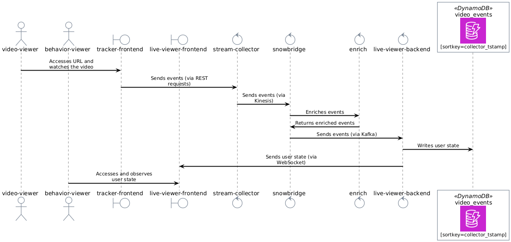
All components in this Architecture run as Docker containers via docker compose:
-
The Snowplow’s components ([stream-collector], [enrich], and [snowbridge]) are defined in the file
compose.snowplow.yaml. -
Kafka’s infrastructure is provided by the file
compose.kafka.yaml. -
The apps components ([tracker-frontend], [live-viewer-backend], and [live-viewer-frontend]) are defined in the file
compose.apps.yaml. -
The infrastructure to provide the resources (Kinesis, Kafka, and DynamoDB) are provided locally, in a development environment, via LocalStack.
-
Read the file
compose.localstack.yaml.
-
-
These components and resources are created in AWS using Terraform scripts.
-
There is another document, in
docs/terraformfolder, explaining the details.
-
3. Steps (to run this application as is)
Step 0 → Prerequisites
-
Start a Ubuntu Linux (it can be running on a WSL2 environment) terminal.
-
Make sure you have docker (and docker compose) installed.
-
Clone this project with Git and cd to it.
-
Create a file
.env(from.env.example) and configure the AWS variables on it.
| You don’t need Java or Node.js configured on your machine to follow the steps below. Only a Bash terminal and a Docker installation. |
Step 1 → Start the containers
$ ./docker/up.sh|
Tips:
|
Step 2 → Open http://localhost:3000 to generate the events
As pointed in the Architecture, this is a instance of [tracker-frontend] component, configured in [compose-apps].
After open the link above, configure the [stream-collector] endpoint:
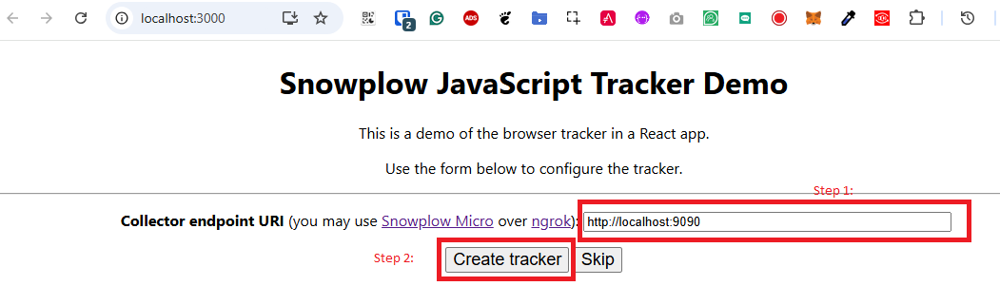
Open the "Custom media tracking demo":
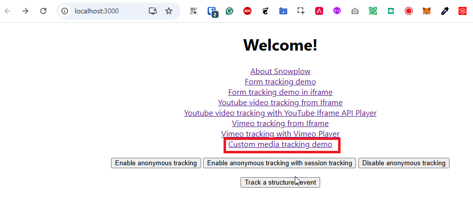
You will get a page like this one:
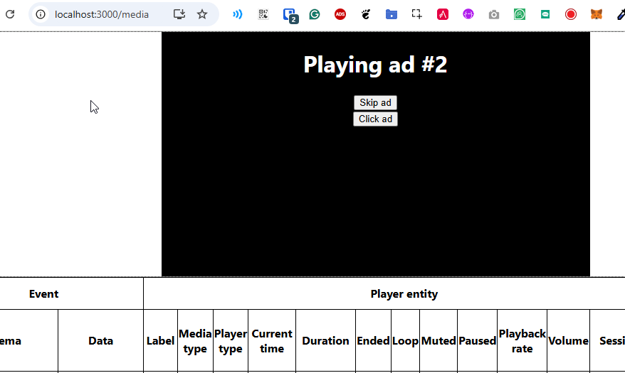
Step 3 → Open http://localhost:8280 to see the "Snowplow Live Viewer Profile" UI.
In the Architecture this is the [live-viewer-frontend] component, configured in [compose-apps].
You will notice, after some time the video was started and for after the first pause you made on it, a screen like this:
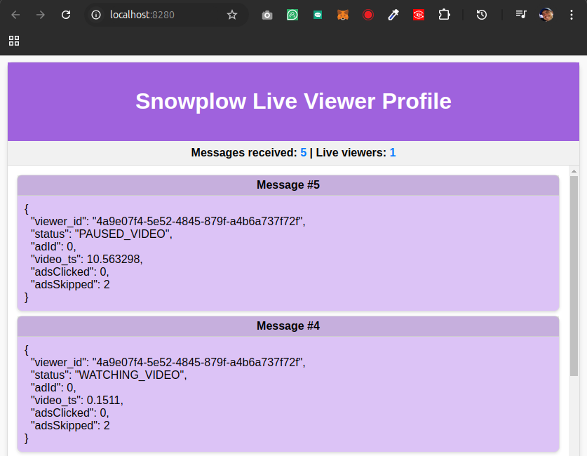
Step 4 → (optional) Open the LocalStack UI to see some details about the infrastructure
You may note that this is a component of [compose-localstack].
Open this link: https://app.localstack.cloud/ and do the sign-in.
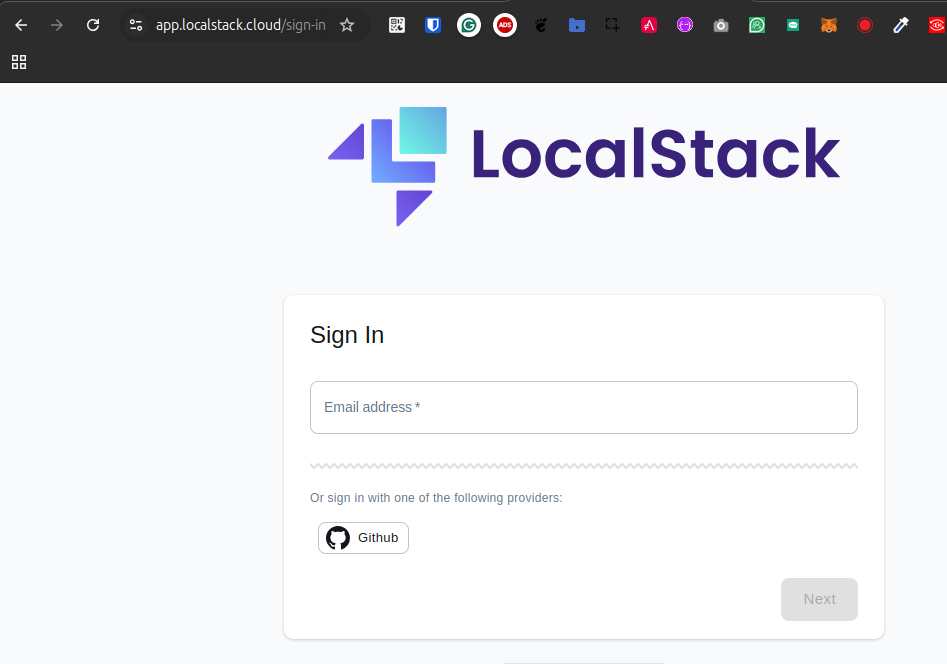
Click on the Status button.
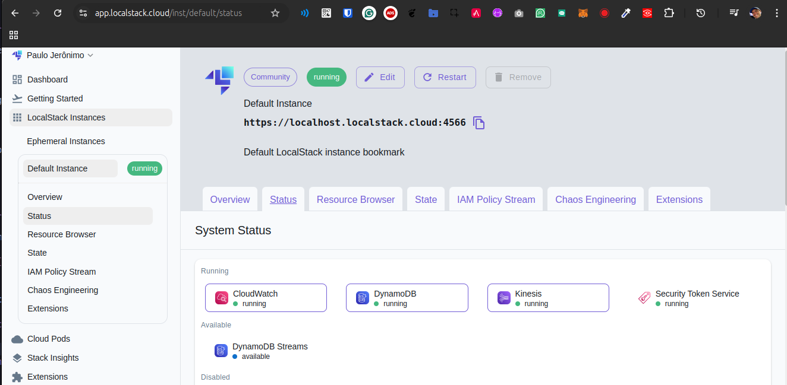
Click on button Kinesis running.
Select the eu-west-2 region to see the Kinesis Streams:
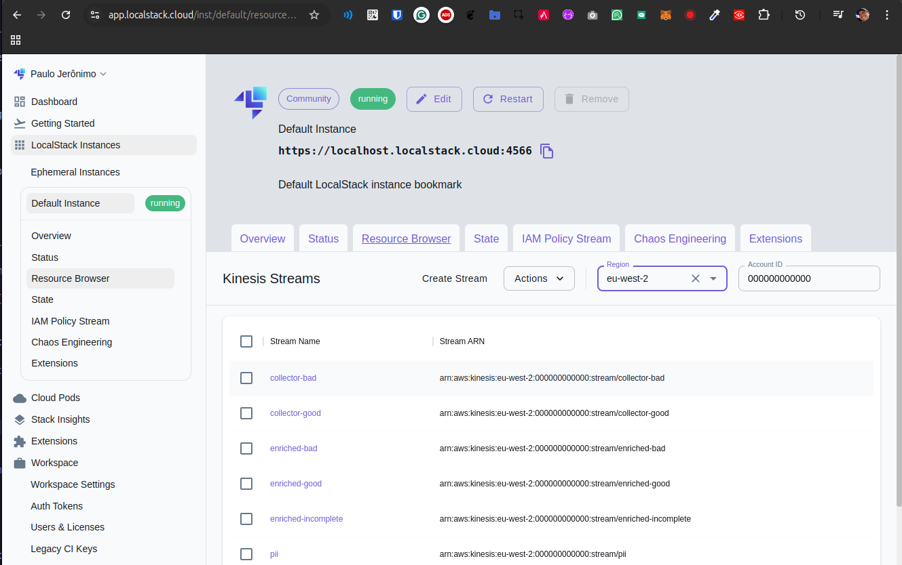
Click on button Status to go back to the System Status.
Click on button DynamoDB running.
You will notice a screen like this one:
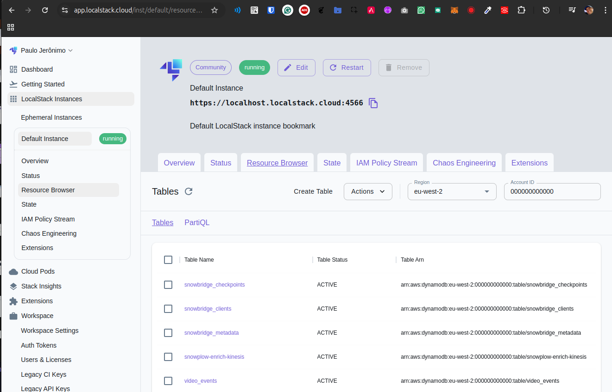
Navigate on the items in the table video_events.
Sort the data by the collector_stamp to locate the last event registered before you pause the video.
You will notice a screen like this one:
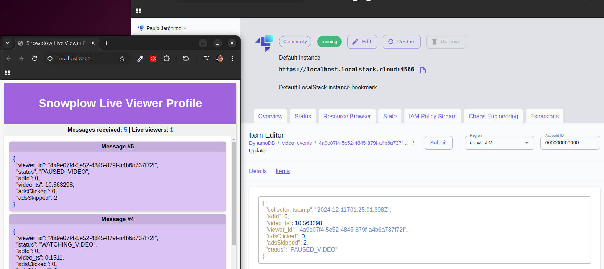
Step 5 → (optional) Open http://localhost:8080 to see the events exported to Kafka UI.
You may note that this is a component of [compose-kafka].
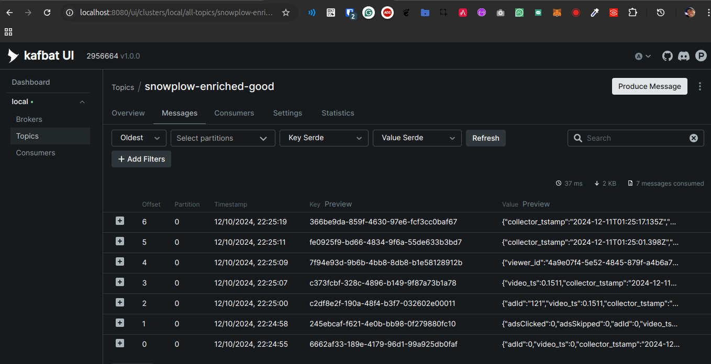